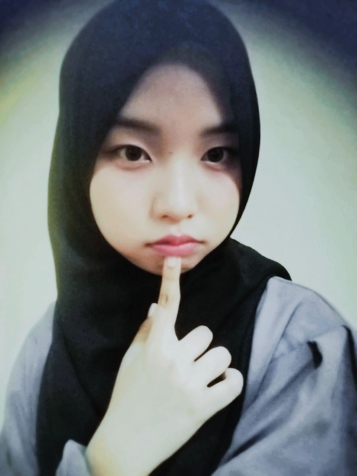
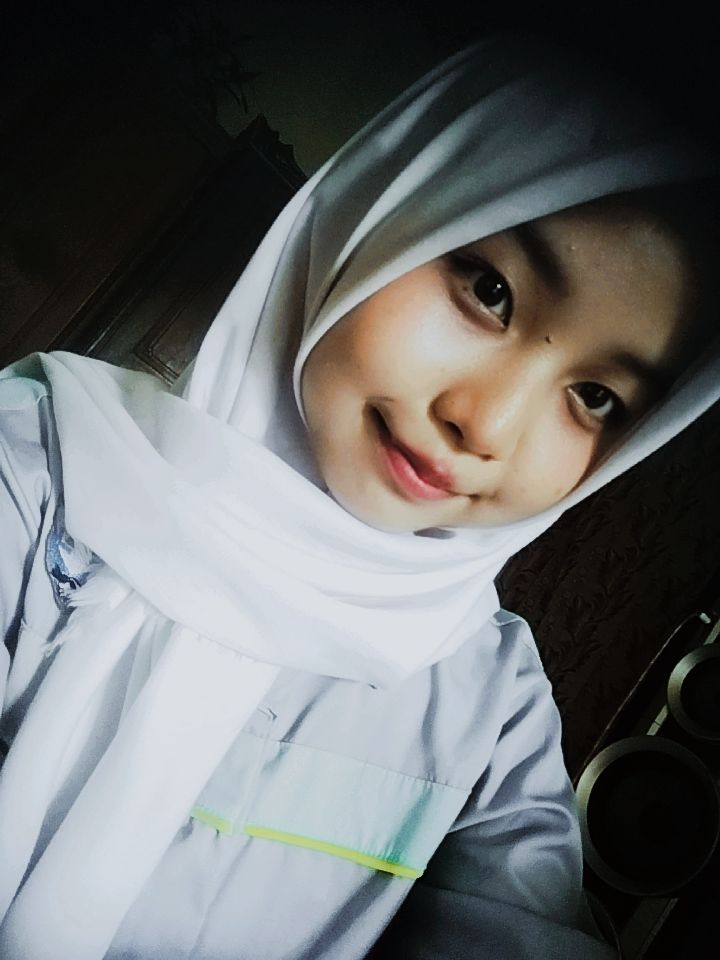

Mencintaimu adalah sebuah ketetapan yang tak butuh banyak kata,
seperti warna yang menyatu sempurna dalam sebuah kanvas atau nada yang
menemukan harmoninya di tengah sunyi. Jika dunia ini adalah lintasan yang
melelahkan dengan segala bisingnya, maka kau adalah satu-satunya pelabuhan
tempat seluruh pencarianku berakhir dengan tenang tanpa perlu lagi memetakan arah pulang.
Aku tidak hanya ingin merayakanmu dalam tawa yang benderang, tapi juga ingin menjadi orang
pertama yang memeluk retakan-retakanmu saat badai datang menghujam, sebab bagiku, kau adalah nirmala yang
membuat setiap hela napas ini memiliki arti untuk terus diperjuangkan melampaui batas waktu.

An Art Gallery Could Never Be As Unique As You

Hai Juann, akuu ngertii kenaoaa tiba tiba mood kamuu jadi berantakann.
Wajar kok kalaw kamu ngerasaa sedih ataw kegangguu. Jangann dipaksaa buat keliatann
'oke' kalaw emangg hatinyaa lagi nggak enak. Ambil waktuu sebanyakj yangg kamuu butuhinn
buat tenanginn dirii. Akuu di sini yaa, ora bakal ke mana manaa. Kalaw kamuu butuhh tempat
buat ditemeninn biar nggak kepikiran truss, just let me know. Your peace of mind itu yangg
paling utamaa sekarangg.